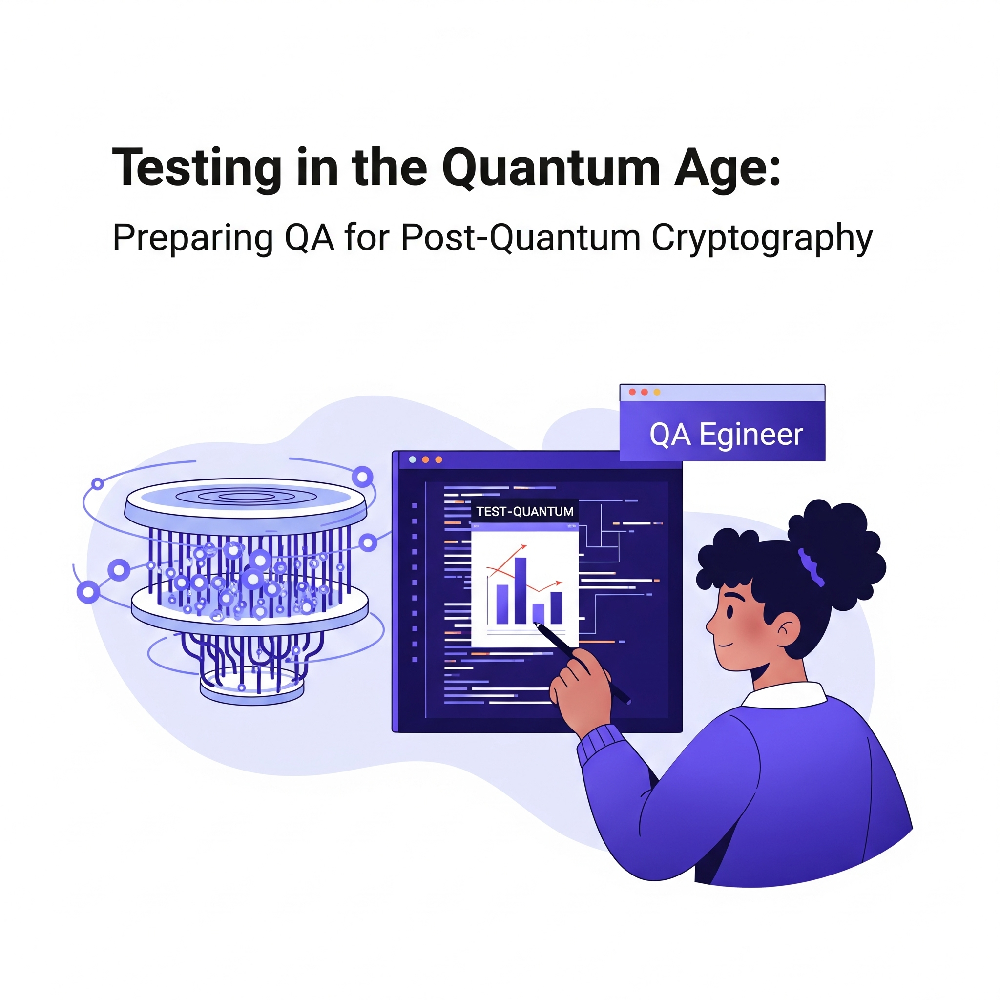

Testing in the Quantum Age: Preparing QA for Post-Quantum Cryptography

Key Takeaways
- Post-quantum cryptography (PQC) is becoming essential for future-proofing security
- QA teams must adapt testing strategies for quantum-resistant algorithms
- Performance and interoperability testing are critical for PQC implementation
- Proactive preparation is key to maintaining security in the quantum age
The quantum computing revolution is no longer a distant possibility—it's knocking on our doors. As quantum computers advance, their potential to disrupt traditional cryptographic systems poses significant challenges and opportunities for software development and quality assurance (QA). By mid-2025, post-quantum cryptography (PQC) will become a critical focus area for securing digital ecosystems against quantum-enabled attacks.
For QA professionals, this shift demands a paradigm change in how we approach security testing, encryption validation, and risk mitigation. In this blog post, we'll explore what post-quantum cryptography means for QA, how it impacts testing strategies, and what steps you can take to prepare your team for the quantum age.
What Is Post-Quantum Cryptography?
Post-quantum cryptography refers to cryptographic algorithms designed to resist attacks from both classical and quantum computers. Traditional encryption methods—such as RSA and ECC (Elliptic Curve Cryptography)—rely on mathematical problems that quantum computers can solve efficiently using algorithms like Shor's Algorithm. This vulnerability has spurred global efforts to develop quantum-resistant encryption standards.
In 2024, organizations like NIST (National Institute of Standards and Technology) are finalizing PQC standards, including lattice-based, hash-based, and code-based cryptographic schemes. These new algorithms aim to secure data against future quantum threats while maintaining compatibility with existing systems.
Why QA Teams Must Prepare for Post-Quantum Cryptography
As quantum computing becomes more viable, QA teams must adapt to ensure applications remain secure in the quantum age. Here's why this preparation is essential:
- Future-Proofing Security: Applications deployed today may still be operational when quantum computers become mainstream. Ensuring they use quantum-resistant algorithms now prevents vulnerabilities later.
- Regulatory Compliance: Governments and industries are beginning to mandate PQC adoption. For example, financial institutions and healthcare providers must comply with evolving cybersecurity regulations.
- Protecting Sensitive Data: Encryption protects everything from user credentials to intellectual property. A breach caused by outdated cryptography could have catastrophic consequences.
QA engineers play a pivotal role in validating these new cryptographic implementations and ensuring seamless integration into software systems.
How Quantum Computing Impacts Testing Strategies
Quantum computing introduces unique challenges and considerations for QA teams. Let's break down how it affects various aspects of testing:
1. Encryption Validation
Traditional encryption algorithms like RSA and AES will need to be replaced or augmented with quantum-resistant alternatives. QA teams must:
- Validate the correctness of PQC implementations.
- Ensure backward compatibility with legacy systems.
- Test performance under real-world conditions, as some PQC algorithms may introduce latency.
2. Security Testing
Quantum computers pose new threats to data integrity and confidentiality. QA teams should:
- Conduct penetration testing to identify vulnerabilities exploitable by quantum attacks.
- Use tools like OpenSSL and Liboqs (a library for post-quantum cryptography) to simulate quantum-enabled breaches.
- Focus on key exchange protocols, which are particularly susceptible to quantum attacks.
3. Performance Testing
Many PQC algorithms are computationally intensive compared to classical cryptography. QA teams must:
- Measure the impact of PQC on application performance.
- Optimize resource usage to minimize bottlenecks.
- Test scalability across distributed systems and edge devices.
4. Interoperability Testing
Transitioning to PQC requires ensuring compatibility between old and new systems. QA teams should:
- Verify seamless communication between systems using different cryptographic standards.
- Address potential issues arising from hybrid encryption schemes (a mix of classical and quantum-resistant algorithms).
5. Compliance Testing
With emerging regulations mandating PQC adoption, QA teams must:
- Ensure adherence to industry-specific compliance frameworks.
- Document test results to demonstrate regulatory compliance.
- Stay updated on evolving standards and guidelines.
Key Challenges in Testing Post-Quantum Cryptography
As organizations transition to post-quantum cryptography (PQC), QA teams face a unique set of challenges that require specialized testing strategies. Below are the primary hurdles and how they impact the testing process:
1. Algorithm Complexity
Post-quantum cryptographic algorithms are inherently more complex and resource-intensive compared to classical encryption methods like RSA or ECC. This complexity introduces several testing considerations for QA teams:
- Performance Bottlenecks: PQC algorithms may slow down application performance, particularly in compute-heavy environments. QA teams must rigorously test how these algorithms affect speed and responsiveness.
- Memory Usage: Many PQC algorithms demand higher memory resources, which could strain systems with limited capacity. Monitoring memory consumption is essential to ensure stability.
- Latency Under Load: High computational requirements can lead to increased latency, especially under heavy workloads. QA teams should simulate real-world scenarios to evaluate how systems perform during peak usage.
2. Interoperability
Transitioning to PQC often involves integrating new algorithms with existing systems, which can create compatibility issues. QA teams must focus on ensuring seamless interoperability across diverse environments:
- Backward Compatibility: Legacy systems relying on classical cryptography must continue functioning alongside quantum-resistant algorithms. QA teams should validate that hybrid encryption schemes work without disrupting current operations.
- Cross-Platform Functionality: Applications running on different operating systems, devices, or browsers need to maintain consistent behavior. QA must verify that PQC implementations are compatible across all supported platforms.
- API Integration: Many applications rely on third-party APIs for encryption and decryption. QA teams must test API interactions to confirm that PQC updates do not break integrations or introduce security gaps.
3. Security Regression
Replacing or augmenting cryptographic libraries is a delicate process that can inadvertently introduce vulnerabilities. To mitigate risks, QA teams must adopt comprehensive security testing practices:
- Penetration Testing: Simulate quantum-enabled attacks to identify weaknesses in PQC implementations. Tools like Burp Suite and OWASP ZAP can help assess the robustness of new algorithms.
- Fuzz Testing: Use fuzzing techniques to uncover unexpected behaviors or crashes by feeding invalid or random inputs into cryptographic functions.
- Static and Dynamic Code Analysis: Perform thorough code reviews and runtime analysis to detect potential vulnerabilities in updated cryptographic libraries. Tools like SonarQube and Checkmarx can assist in identifying security flaws early in the development lifecycle.
Proactive Measures for QA Teams
To address these challenges effectively, QA teams should:
- Collaborate closely with developers to understand the nuances of PQC algorithms.
- Leverage automation tools tailored for cryptographic testing.
- Stay informed about evolving standards from organizations like NIST to ensure compliance and alignment with industry best practices.
By tackling these challenges head-on, QA professionals can ensure that post-quantum cryptography not only secures applications against future threats but also maintains performance, compatibility, and reliability in today's digital ecosystems.
Preparing Your QA Team for the Quantum Age
To address these challenges and ensure readiness for post-quantum cryptography, here are actionable steps QA teams can take:
1. Upskill Your Team
Invest in training programs focused on quantum computing, cryptography, and PQC. Online courses, certifications, and workshops can help bridge the knowledge gap.
2. Adopt Quantum-Simulation Tools
Use quantum simulators like IBM Quantum Experience, Google Quantum AI, and Microsoft Azure Quantum to experiment with quantum-resistant algorithms. These tools enable QA teams to simulate quantum attacks and test defenses.
3. Leverage Open-Source Libraries
Open-source libraries such as Liboqs and PQClean provide implementations of PQC algorithms. Incorporate these into your testing pipelines to evaluate their effectiveness.
4. Implement Hybrid Encryption
During the transition period, consider using hybrid encryption schemes that combine classical and quantum-resistant algorithms. This approach ensures compatibility while gradually phasing out vulnerable methods.
5. Collaborate with Developers
Work closely with development teams to integrate PQC early in the SDLC. Shift-left testing ensures security is baked into the design rather than bolted on later.
6. Stay Updated on Standards
Monitor updates from organizations like NIST and IETF (Internet Engineering Task Force) to stay informed about finalized PQC standards. Align your testing strategies accordingly.
7. Automate Security Testing
Automated tools like OWASP ZAP, Burp Suite, and custom scripts can streamline PQC validation, reducing manual effort and improving accuracy.
Real-World Use Case: Transitioning to PQC in Financial Services
To illustrate the importance of PQC testing, let's consider a hypothetical scenario involving a financial services company.
Challenge
The company relies on RSA encryption to protect sensitive customer data. With quantum computing advancements, leadership recognizes the need to transition to PQC but faces challenges:
- Ensuring minimal disruption during migration.
- Validating the security and performance of new algorithms.
- Complying with stringent regulatory requirements.
Solution
The QA team adopts a phased approach:
- Phase 1: Evaluate PQC algorithms using quantum simulators and open-source libraries.
- Phase 2: Implement hybrid encryption to maintain compatibility with existing systems.
- Phase 3: Conduct rigorous security and performance testing, focusing on key exchange protocols and transaction processing.
- Phase 4: Document compliance and train staff on PQC best practices.
Outcome
By proactively addressing quantum threats, the company achieves:
- Enhanced security against future quantum attacks.
- Seamless integration of PQC without disrupting operations.
- Full compliance with industry regulations.
The Future of QA in the Quantum Age
As quantum computing continues to evolve, its impact on QA will only grow stronger. Here's what the future holds:
- AI-Driven Testing: AI will assist QA teams in identifying quantum vulnerabilities and optimizing PQC implementations.
- Quantum-Specific Tools: Dedicated testing frameworks for quantum-resistant cryptography will emerge, simplifying validation processes.
- Global Collaboration: Organizations worldwide will collaborate to establish unified PQC standards, streamlining testing efforts.
- Continuous Learning: QA professionals will need to embrace lifelong learning to keep pace with rapid advancements in quantum technology.
Conclusion: Embrace the Quantum Revolution
The advent of quantum computing marks a turning point in software security. While it presents unprecedented challenges, it also offers an opportunity for QA teams to redefine their role as guardians of digital trust. By preparing for post-quantum cryptography today, you can ensure your applications remain secure, compliant, and resilient in the quantum age.
Are you ready to future-proof your QA practices? Share your thoughts or questions in the comments below. Let's discuss how QA teams can lead the charge in securing the digital landscape against quantum threats!
Join Our Community of QA Professionals
Get exclusive access to in-depth articles, testing strategies, and industry insights. Stay ahead of the curve with our expert-curated content delivered straight to your inbox.
Nikunj Mistri
Founder, QA Blogs
About the Author